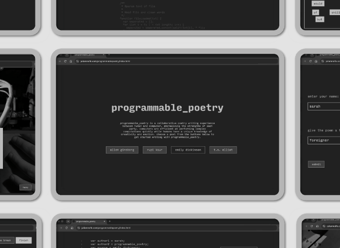
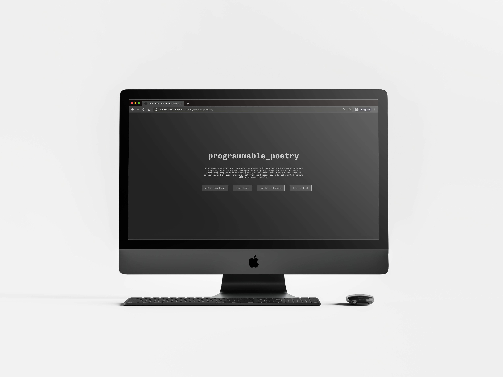
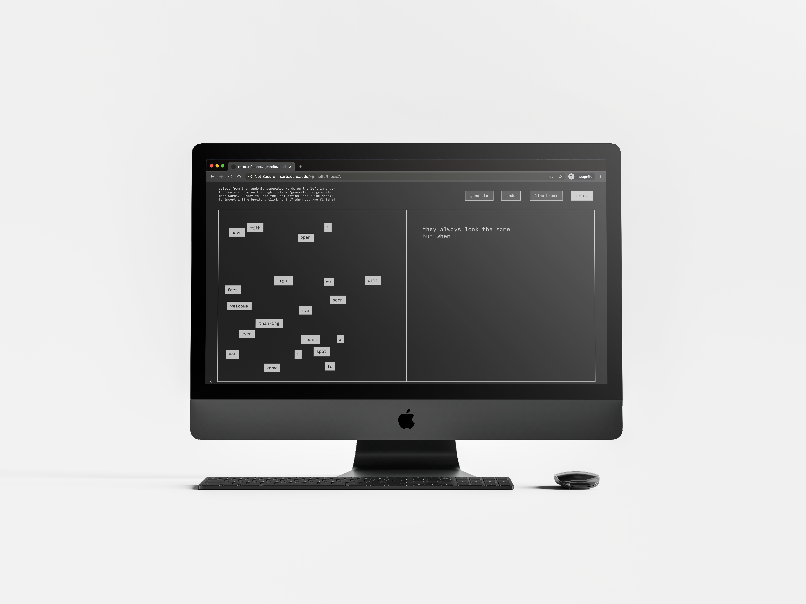
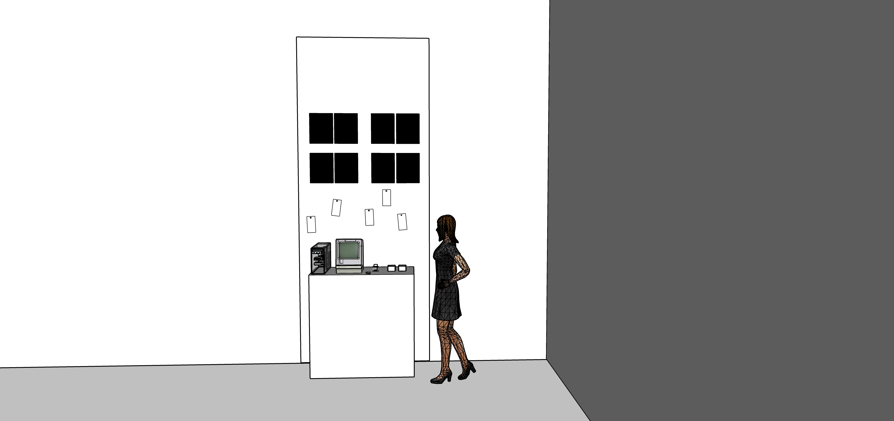
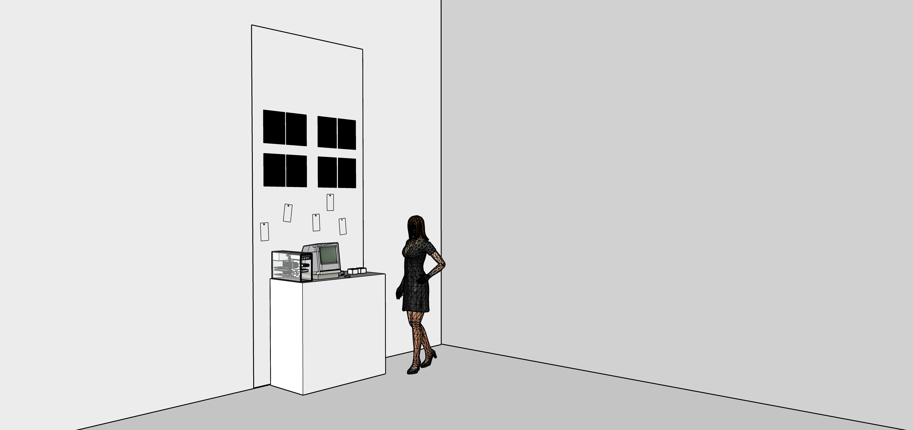
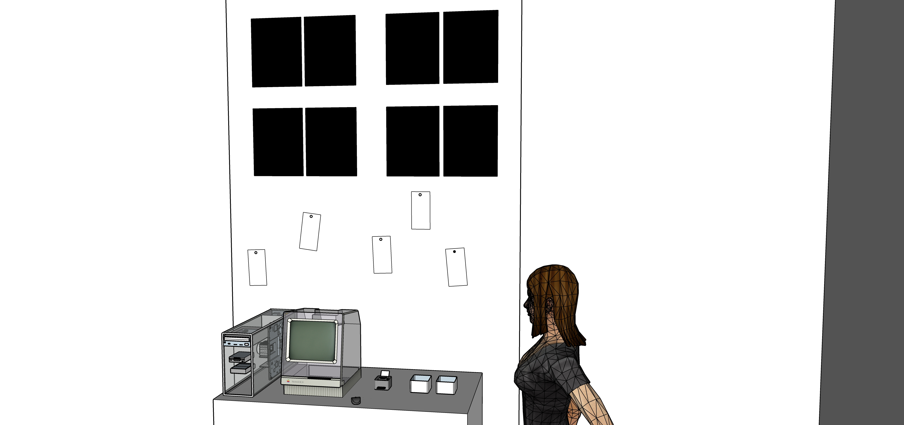
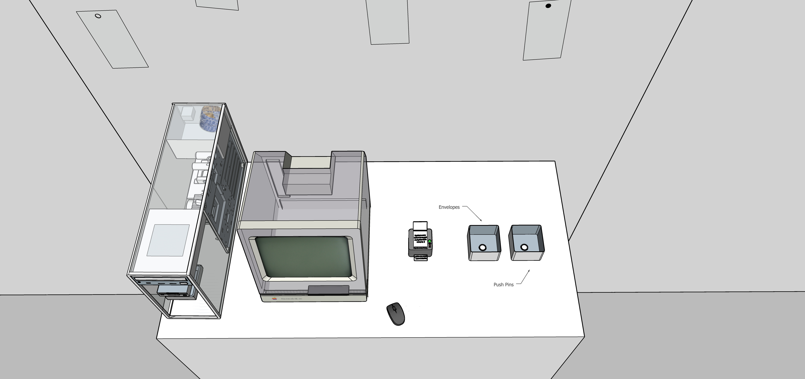

programmable_poetry
programmable_poetry is a collaborative poetry-writing experience between user and computer designed to cultivate a relationship of connection and understanding between human and machine. Poetry is a form of literature that expresses human emotions in raw and intimate ways, but often requires structure and order. As a digital artist, programmer, and educator, there are few areas of my life that are not consumed by technology. Writing poetry is one of those areas. The act simply involves a notebook, a pen, and a thought: no computer necessary. Because poetry still feels unabashedly human in a world laden with tech, I wanted to explore how poetry and technology could coexist to create an experience that combats technophobia, a fear, dislike, or avoidance of new technology. programmable_poetry aims to do this by strengthening the user’s relationship with technology through collaboration and understanding. I believe that building this relationship is essential in a world that is so deeply entangled with technology.
try programmable_poetryINTERACTIVE POETRY-WRITING PROGRAM
programmable_poetry begins with a program that generates random words from selected works of the user’s chosen poet. The user is then encouraged to use their creativity to arrange the words into a poem. Once a poem is completed, it is attributed to both authors, the user and the program, and stylized into a code-like format. Lastly, the user places their piece among poems written by other users. The gallery is accompanied by a series of photographs of both the human body and internal hardware, stripping both down to their most intimate parts in order to create a feeling of connection between man and machine.

program preview

homepage

poetry writing screen

digital gallery wall
video documentation
PHOTO SERIES
The gallery at the end of the experience is accompanied by a photo series created specifically for this project. The photo series juxtaposes images of hardware and the human body, creating visual comparisons that highlight the similarities between the two. To create the photographs, I deconstructed a VCR and took detail shots of its internal hardware. I modelled and photographed the nude human body photos, focusing on intimate areas and an up-close perspective. In these shots, I strove to showcase both the human body and technology in their most raw forms, without the covers and clothes we use to hide them.
I was inspired by this set of photos that show visual comparisons between the human body and nature. I think it is often easy to find ourselves in and connect with nature, but more difficult to do the same with technology.
{kind=link}

visual comparison between wrist and internal hardware

visual comparison between gear and female breast

visual comparison between the palm of a hand and motherboard

visual comparison between internal hardware and armpit
INSTALLATION
This project was designed to be installed at SOMArts in San Francisco, California, a local cultural center and art gallery that leverages the power of art as a tool for social change through multi-disciplinary events and exhibitions.
The installation plan includes the digital poetry-writing experience on a desktop computer. The desktop features a transparent monitor and tower case to put the internal hardware on display and add another point of interest and potential connection. Beside the desktop is a thermal paper printer for the poems to be printed on once complete. The gallery wall is situated above the computer with the photo series printed at a large scale on display. Push pins are provided for the user to hang up their printed poem. Alternatively, envelopes are provided for the user to safely seal their poem to take home. The user could explore poems written by other patrons tacked to the wall.
However, when COVID-19 caused the world to move online and the in-person exhibition to be moved digitally, I had to pivot to an online install, which ushered in the addition of video documentation, the digital gallery wall, at-home printing, and more rounds of user-testing to fine-tune the program. The resulting project can be used entirely online and remote, focusing more deeply on the user's one-on-one interaction with the computer, and still managing to maintain a sense of community in the digital gallery.




exhibition installation mockup
ANNOTATED BIBLIOGRAPHY
This project began with the desire to explore the relationship between humans and computers and how that relationship can be improved, leading to this framing question: How can poetry and imagery be used to cultivate a relationship of collaboration, rather than fear, between humans and technology? What I found in my research was that the coexistence of poetry and technology is being explored from other perspectives. There are poets emulating technology with code poetry and computers emulating human emotions with AI generated poetry. What hadn't been explored, however, was the potential collaboration between human and computer in order to write a poem together. This is why I wanted to make programmable_poetry: not to pit human and machine against each other, but to show how they can work together and gain a better understanding of each other in the process.
Annotated bibliography of research sources
Brosnan, Mark J. Technophobia: the Psychological Impact of Information Technology. Routledge, 1998.
Mark J Bronsan’s book, written in the late 90s, a time when technology had started to become a part of everyday life, talks about the impact of the technological world on people and the rise of technophobia. Bronsan theorizes that technophobia affects all people to some degree and recognizes that it was once thought to be a passing phenomenon that would pass once the younger generation went through an education involving technology. However, this is not the case as technophobia is still prevalent in the younger generation that grew up with technology. Throughout the book, he explores technophobia from education, to business, to personal and theorizes how technophobia can be improved in the future.
Even though Bronsan's book is over 20 years old, much of what he talks about is relevant today and can still be applied to our modern world. This shows that technophobia is not a thing of the past nor have we found a way to combat it in the decades since, as technology has further engulfed our lives. Bronsan argues that we can improve technophobia by building confidence through education. This is what programmable_poetry strives to do.
Edwards, Benj. “8 Ways the iMac Changed Computing.” Macworld, Macworld by IDG, 15 Aug. 2019, www.macworld.com/article/1135017/imacanniversary.html.
Benji Edward’s article breaks down a history of how the design of Apple’s original iMac computer and subsequent models changed the way we view the world of computers, particularly its unique style and hardware. In addition to important innovations in computing such as the standardization of USB and providing easy access to the internet for its users, the iMac’s signature translucent case, chiefly designed by Jonathan Ive, ushered in a surge of technicolor translucent electronics in the late 90s and early 2000s, challenging the way we view and interact with everyday technology.
One of my big goals in programmable_poetry is to demystify the world of computing to technology-users and cultivate a more intimate relationship with the tech we use everyday. This mission is not unlike that of Jonathan Ive, who designed a machine that encased complex hardware into an approachable, candy-colored casing. This article greatly influenced me to incorporate translucent/transparent technology into my project and ponder how I could not just showcase the software and coding that makes technology work, but utilize and manipulate the physical hardware too.
Fritscher, Lisa. “Understanding Technophobia.” Verywell Mind, Verywell Mind, 6 Mar. 2020, www.verywellmind.com/what-is-the-fear-of-technology-2671897.
“Understanding Technophobia” explores the very real anxiety or fear related to the effects of technology that, Fritscher argues, affects everyone to some degree. Her article brings up historical events of mass hysteria and fear surrounding technology, showing that technophobia is not a new concept and has in fact existed since the dawn of technology. While much of her article talks about Y2k and doomsday scenarios, she doesn’t forget to recognize the smaller anxieties we may all face around new technology and the way new technology is constantly challenging and shaping the way we view the world, real and digital.
programmable_poetry, aims to combat technophobia on a small scale—the kind we all feel from time to time. This article reaffirmed my own belief that all people, even the most proficient programmers or persons in the technology industry, suffer from even the smallest amount of fear, anxiety, and frustration around new and changing technology. This article guided me in researching what it means to be technophobic and how this fear can be overcome.
Kamenetz, Anya. “The Four Things People Can Still Do Better Than Computers.” Fast Company, Fast Company, 19 July 2013, www.fastcompany.com/3014448/the-four-things-people-can-still-do-better-than-computers.
In her article, Anya Kamenetz celebrates the things humans can still do better than computers, while acknowledging that there are many instances in which computers can perform certain tasks quicker and with higher accuracy. She focuses her list on non-linear problem solving, prioritization of information, and physical activities, but ends on a simple, yet striking note: being human. Although research in AI and adjacent fields are constantly striving to find ways to make computers more human-like, Kamenetz argues that there is a certain “human touch” that is not a part of computing, and that that touch is indispensable.
In my search to understand the divisions and intersections between human and machine, I began to feel discouraged thinking that perhaps computers can already do all that humans can (and more). But, this article showed me that there are qualities of the human mind that computer programmers cannot replicate (and may never be able to). It left me pondering if a computer could ever be considered to be as truly autonomous and freethinking as a human being, especially if it takes a team of humans to create those abilities. Additionally, this article helped me in nailing down what human qualities and what computer qualities I could highlight in the writing of poetry, which helped lead programmable_poetry towards truer collaboration between human and machine.
Spiliotopoulos, Konstantinos, et al. “A Comparative Study of Skeuomorphic and Flat Design from a UX Perspective.” Multimodal Technologies and Interaction, vol. 2, no. 2, 2018, p. 31., doi:10.3390/mti2020031.
In this article, the authors talk about a study conducted comparing skeuomorphic and flat design. Skeuomorphic design is a graphic user interface design method that attempts to mimic a digital interface object’s physical world counterpart in a digital space. This is meant to increase familiarity and make digital UIs feel closer to the physical world. Flat design, on the other hand, is a UI design style that is very popular and uses flat, 2 dimensional illustrations of real-life objects. In this study, they used a series of tests to see whether participants found skeuomorphic icons or flat design icons easier to understand, quicker to find, and more beautiful. They concluded that skeuomorphic was easier to comprehend.
In part, programmable_poetry recreates something that already exists in the physical world and mimicking it in the digital world: magnetic poetry sets. Even though the real-life object is already rather flat and 2 dimensional, this study left me thinking about adding some sort of drop shadow around the words to give the poetry writing experience a more physical feeling. It also allowed me to consider how I can make the digital experience I’m creating feel connected to the physical world in order to create a sense of familiarity and ease for the user.
“The Light Phone.” The Light Phone, www.thelightphone.com/.
The Light Phone is a minimalistic smartphone “born as an alternative to the tech monopolies that are fighting more and more aggressively for our time & attention”. Light removes all the bells and whistles of today’s typical smartphone, stripping it down to the core functionality of a cell phone. Through its minimalistic design and need-based functionality, it accomplishes its goal of creating a cell phone that one can carry around on a daily basis without creating unnecessary distraction and clutter in the user’s mind.
The mission of the Light is to combat the flashy new cellphones of our contemporary tech world. In doing this, the design of the product is simple, intuitive, and easy to interact with. A balance I tried to strike with programmable_poetry is creating an experience that both showcases the inner workings of technology we use every day while also communicating approachability to avoid overwhelming the user. Light’s cellphone, I think, does a remarkable job of streamlining the complexities of a cell phone and packaging it in an easy to understand interface, the kind of phone even my grandparents could understand. Reading about Light’s product led me to important questions about generational divides in technology and what makes certain electronics more or less approachable for the average user, which has greatly influenced the user interface and user interaction of programmable_poetry.
Winesmith, Keir. “On Collaboration: SFMOMA and Adobe Rethink the Selfie", Oct. 2016, www.sfmoma.org/read/on-collaboration-sfmoma-adobe-rethink-selfie/.
Self Composed, a part of SFMoMA’s Photography Interpretive Gallery, is an interactive photo booth that challenges our notion of the selfie by encouraging the user to compose a self portrait using the items in their pockets. The user sits before a large screen and glass surface. Wherever objects are placed on the surface, that area becomes more contrasted on the screen and you can see the subject (the user) through those shapes. A photo is taken and your composition prints out on thermal paper at the side of the machine. In her article about the piece, Keir Winesmith talks through the level of planning and collaboration involved to create and install this piece into SFMOMA, requiring skills of artist, technology, and Adobe. She applauds the resulting piece’s display of many different minds coming together and the positive reaction it brings from its users.
I originally approached this piece in SFMOMA because it utilized a lot of the same formal elements I was looking to use in my own work: a screen someone can sit in front of and interact with to create art that is then printed and given to the user. What I didn’t expect to get from this piece was a new definition of “collaboration”. Collaboration is the cornerstone of programmable_poetry as it is the avenue through which it tries to cultivate understanding and intimacy between the user and the program. The last line of Winesmith’s article talks about the interpersonal collaboration the piece promotes between users: “Self Composed is an example of what all good collaborations can produce—something that neither group could or would have created on its own.” This definition of collaboration sparked me to change the experience of programmable_poetry to focus on what each side, human and computer, can uniquely provide and how those opposing skills can create something neither could have on their own. This definition has become a vital part of how programmable_poetry is framed.